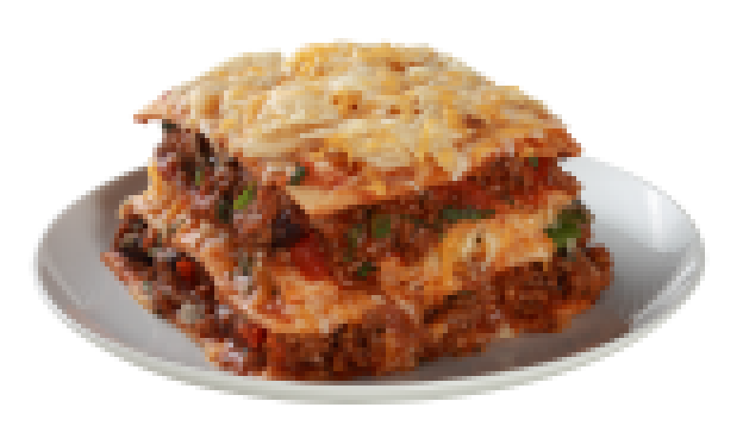

Lasagna alla bolognese

Description
Garfield's favorite dish. A classic Italian pasta dish made with stacked lasagna sheets inbetween layers of ground meats in tomato sauce, béchamel sauce, vegetables, spices and cheese.
Ingredients
Lasagna layers
- 1 lbs (454 g) box of dry lasagna sheets
- 1 cup (1/2 pint, 236 mL) cream
- 1/2 cup (50 g) grated parmesan or pecorino
- Some grated mozzarella for top layer
- 2-3 garlic cloves, peeled and chopped
- Salt
- Fresh herbs for garnish (e.g., basil)
Meat Sauce
- 1 lbs (454 g) ground beef
- 28 oz (800 g) can of whole peeled tomatoes (as it has more juice)
- Tomato paste
- 1 large onion
- 1 large carrot
- Olive oil
- Salt
-
Seasonings
- Garlic & onion powder
- Dried oregano/basil/parsley/marjoram
- Pepper
- Dried chili flakes
- Balsamic vinegar or white wine
Steps
Meat Sauce
- Peel and dice onion and carrot
- Cook them in a little olive oil in a wide pan over high heat until soft and browning (4-5 min)
- Push vegetables to the edge of pan and smash the meat into the center to create a wide flat disk
- Cook until meat is browning then scrape bottom of the pan and stir, using the moisture of remaining raw meat to deglaze (turn heat down at this stage)
- When all the meat has turned color, stir in a squeeze of tomato paste and let it brown for a bit before it burns
- Add can of peeled tomatoes, crush and stir them in to deglaze with its juice
- Add a pinch of salt and seasonings
- Reduce heat to a simmer and cook for at least an hour, stirring occasionally
- Taste for seasoning and stir in a little splash of vinegar
This will yield more than twice the meat sauce needed for a 8x8 inch lasagna. Put leftover meat in the freezer.
Lasagna
- Heat oven to 180ºC
- Cover bottom of the pan with a layer of cream then lay in the first layer of raw lasagna noodle
- Sprinkle the pasta layer with some salt and chopped garlic, then lay in a layer of meat sauce
- Sprinkle meat sauce with parmesan then lay in another pasta layer
- Repeat until you have 4 layers, with at least a little meat sauce on the top. Drizzle the rest of the cream on top
- Tightly cover the pan with foil and bake for 45 minutes
- Afterwards, take foil off, sprinkle some mozzarella and bake for another 15 minutes
- At the very end, turn on grill to brown the cheese to your liking (this only takes a few minutes, watch closely)
- Cool for at least 15 minutes before cutting and serving with fresh herbs
Recipe credited to Adam Ragusea